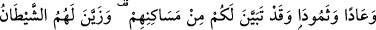
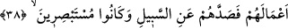
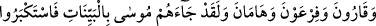
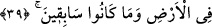

diz üstü çöke kaldılar.”
Bu durum, Hûd sûresinde “Zulmedenleri de o korkunç ses yakaladı ve yurtlarında
diz üstü çökekaldılar” (Hûd, 11/67) şeklinde ifâde edilmiştir. Bu, Cebrâil (a.s.)’ın
sayhasıdır; havada dalgalanarak yerde şiddetli bir sarsıntıya sebep olmuştur.
Yâni, evleri başlarına yıkıldı. Beldelerinde veya evlerinde diz üstü çöküverdiler; yüz
üstü ölüler olarak serilip düştüler. Çünkü hak dâvetine kulak vermemişlerdi; bâtınları
sarsılmış, felâkete uğramıştı. Dolayısıyla cezâları da amellerinin cinsinden oldu.
Bu âyette, “yurtlar” şeklinde (Hûd sûresi 67. âyette olduğu gibi) çoğul değil de, “yurt”
olarak müfred gelmesi, karışıklıktan emin olunduğu içindir.
38. Âd ve Semûd’u da (helâk ettik). Sizin için, (onların başına nelerin geldiği)
oturdukları yerlerden apaçık anlaşılmaktadır. Şeytan onlara yaptıkları işleri güzel
gösterip onları doğru yoldan çıkardı. Oysa bakıp görebilecek durumdaydılar.
“Âd ve Semûd’u da (helâk ettik).”
“Âd” kelimesi, öncesinin delâlet ettiği mukadder bir fiil ile mansub’dur. Yâni “Hûd
kavmi olan Âd’i helâk ettik” takdirindedir. “Semûd” Sâlih (a.s.)’ın kavmidir; “kabile”
anlamında olup gayr-i munsarif bir isimdir.
Ey Mekke halkı! Yemen’deki Âd kavminin diyarını, Hicr’deki Semûd kavminin
diyarını helâk edişimiz; “sizin için, (onların başına nelerin geldiği) oturdukları
yerlerden apaçık anlaşılmaktadır.” Yani, bu diyarlara yolculuk yaparken onların
kalıntılarını görüyorsunuz.
“Şeytan onlara yaptıkları işleri,” küfrü ve günahları “güzel gösterip onları” asıl
girmeleri gereken ve tevhîde götüren hak ve “doğru yoldan çıkardı. Oysa bakıp
görebilecek durumdaydılar.” Keşke onlar basiret sâhibi olsalar ve ibret alsalardı;
istidlâl ve nazarla akıllarını kullansalardı. Fakat onlar şeytana uyup böyle yapmadılar;
hakkı bâtıldan ayırmak için akıllarını kullanmadılar ve sonunda hayvanlar gibi oldular.
39. Karun’u, Firavun’u ve Hâmân’ı da (helâk ettik). Andolsun ki, Musa onlara